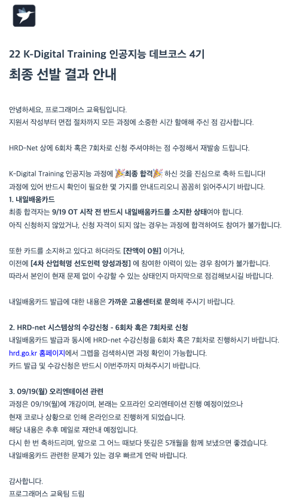

이번 글에서는 프로그래머스 인공지능 데브코스 4기의 합격 후기를 적어보려고 합니다.
해당 프로그램을 처음 보시는 분들이 있을 수도 있기 때문에 간단히 이 프로그램에 대해 소개하고,
지원부터 합격 발표까지 과정은 어떠했는지, 지원서는 어떻게 작성했는지 등에 대해서 나눠보려고 합니다.
또한 이 프로그램을 통해서 개인적으로 기대하는 부분도 함께 말씀드리려고 합니다!
향후 프로그래머스에서 진행하는 데브코스에 관심이 있거나, 이 분야를 준비하시는 분들에게 도움이 되었으면 좋겠습니다.
1. 인공지능 데브코스 4기 소개
AI 분야 주니어 개발자가 갖춰야 할 역량은 실존하는 다양한 모델을 그저 쓰는 것에 그치지 않고,
그 구성 요소를 이해하고 상황에 맞게 응용할 수 있는 능력이 필요합니다.
-> 학습 내용: 파이썬, 수학, 머신러닝 및 딥러닝, NLP, CV, 추천 시스템, Spark, DB, SQL
프로그래머스에서는 내일배움카드 (K-digital training)를 통해 소위 말하는 ‘부트캠프’를 운영하고 있습니다.
이번에 소개하는 인공지능 데브코스 4기 외에도 프론트엔드, 백엔드, 자율주행 분야로 기수 별로 모집하고 있습니다.
이 프로그램에서는 약 5개월 동안 인공지능 모델 뿐 아니라, 프로젝트를 통해 기획부터 웹 배포까지 경험해볼 수 있습니다.
또한 대학 교수님 및 실리콘 벨리의 현직 전문가 등의 강사진으로부터 해당 지식들을 학습할 수 있습니다.
아래의 링크 및 표를 통해 어떠한 내용들을 학습하는지 개괄적으로 확인할 수 있습니다.
인공지능 데브코스 커리큘럼 요약
| 주차 | 학습 주제 | 세부 내용 |
|---|---|---|
| 1개월 (1주차) | OT, 파이썬 기초 | 진행방식 및 운영 소개, 파이썬 문법 학습, 알고리즘 및 자료구조 학습 |
| 1개월 (2주차) | 웹 스크래핑 기초 | BeautifulSoup 및 Selenium 학습, Matplot을 통한 시각화 |
| 1개월 (3주차) | 파이썬으로 데이터 다루기 | Numpy 및 Pandas 학습, 데이터프레임 다루기 |
| 1개월 (4주차) | 파이썬으로 웹 다루기 | Flask 및 Django를 통한 웹 서버 학습, AWS를 통한 머신러닝 모델 API |
| 2개월 (1주차) | 머신러닝 기초 | E2E ML 프로젝트 (데이터 전처리, 모델학습), Probability distributions |
| 2개월 (2주차) | 인공지능 개론 및 수학 | 기계학습 소개, 신경망 및 딥러닝 기초 소개, Kaggle 경진대회 |
| 2개월 (3주차) | Linear models (회귀, 분류) | 선형대수학, Matrix calculus 리뷰 |
| 2개월 (4주차) | CNN과 RNN 특징 및 논문 리뷰 1 | CNN, RNN, Deep learning 최적화 |
| 3개월 (1주차) | CNN과 RNN 특징 및 논문 리뷰 2 | CNN, RNN, Deep learning 최적화, 코드 리뷰 |
| 3개월 (2주차) | SQL과 실무 DB (Spark) 1 | Spark, Spark MLlib, Spark Dataframe 실습 및 소개 |
| 3개월 (3주차) | SQL과 실무 DB (Spark) 2 | Spark, Spark MLlib, Spark Dataframe 실습 및 소개 |
| 3개월 (4주차) | NLP (Text classification) | Text representation, fastText model |
| 4개월 (1주차) | Visual recognition | Object recognition, Domain/style Transfer, GAN |
| 4개월 (2주차) | 추천 시스템 | 추천 시스템 소개 및 실습 |
| 4개월 (3주차) | 추천 시스템 및 GAN | 추천 시스템 구현, GAN 기반 딥러닝 처리 |
| 4개월 (4주차) | 강화학습, 중간 프로젝트 발표 | 강화학습 알고리즘, 중간 프로젝트 기획서 발표 |
| 5개월 | 최종 프로젝트 | 최종 프로젝트 진행 상황 공유, 멘토링, 발표, 수료식 |
2. 지원 동기
저는 개인적으로 유튜브 EO 채널을 좋아하는데, 이 채널에서 인사이트 가득한 한 분을 뵐 수 있었습니다.
한기용님의 인터뷰에서 지금까지의 삶 속에서 경험하신 것들을 진솔하게 말씀해주신 과정에서 울림이 있었습니다.
삶을 살다보면, 내 선택에 대한 아쉬움과 후회 그리고 감사함과 기쁨 등의 다양한 감정을 느낄 수 있을텐데,
한국과 실리콘 벨리에서의 삶 속에서 경험한 모든 것들을 솔직하게 이야기하고, 조언해주신 것들이 와닿았습니다.
이렇게 인상 깊었던 한기용님을 기억했다가, 이번 인공지능 데브코스 4기에서 강사님으로 계신다는 소식을 들었습니다.
그래서 조금 더 가까이에서 이 분과 교제하고, 배우며, 이야기를 나눠보고 싶은 마음에 지원을 결심하게 되었습니다.
뿐만 아니라, 지금까지 머신러닝 위주로 학습했던 한계를 조금이나마 극복하기 위해서 딥러닝 분야의 지식을 쌓고,
인공지능 모델을 비롯하여 SQL이나 데이터베이스를 비롯해 spark 등의 내용을 학습할 수 있는 것도 좋았습니다.
데이터 엔지니어링 분야 역시 관심을 가졌던 분야이므로, 이러한 내용들을 학습해보고자 합니다.
3. 지원서 작성
이번 데브코스는 아래와 같은 총 5개의 문항으로 이뤄져 있습니다.
그리고 이 문항들에 대해 제가 어떤 식으로 자기소개서를 작성했는지 소개해보려고 합니다.
(1) 어떻게 프로그래밍을 학습했는지, 앞으로 어떻게 학습할 계획인지 소개
이 문항에 대해서는 원래 문과생이였던 제가 왜, 어떠한 이유로 프로그래밍을 학습하게 됐는지 그 계기를 설명했습니다.
저는 프로젝트 안에서 기획적인 측면을 담당하며 직접 스스로 무엇인가를 만들며 실현하지 못한다는 아쉬움이 있었습니다.
이러한 한계점을 극복하고자 처음으로 프로그래밍 특히, 데이터 사이언스를 공부하게 되었다고 소개했습니다.
이후, 데이터 분석에서부터 시작해서 데이터 사이언티스트, 백엔드 엔지니어로 가게 된 배경을 설명했습니다.
그리고 언어의 기본적인 문법을 학습한 후에, 다양한 프로젝트를 통해서 더 깊이 있게 해당 분야를 이해할 수 있는 것처럼,
지금까지 해왔던 프로젝트를 통해 성장했었고, 이번 데브코스의 프로젝트를 통해 더 성장할 수 있음을 어필했습니다.
또한 배운 것들을 기록하고, 남기는 것의 중요성을 이야기하면서 이번 데브코스에서 기록하는 습관을 조금 더 기르며,
배웠던 것들을 잘 정리해보고 싶다고 이야기했습니다. 실제 이 블로그를 작성하는 것 역시도 이 내용의 일환입니다!
(2) 인공지능 분야로 진출하려고 하는 이유
인공지능 분야로 진출하려고 하는 동기에서는 문제 정의의 중요성을 계속해서 강조했습니다.
개인적으로 백엔드 엔지니어로 있을 때 아쉬웠던 점은 기획 과정에 참여하지 않고 요구 사항만을 개발한다는 점이었습니다.
이러한 한계를 극복할 수 있는 데이터 사이언스는, 직접 문제 정의부터 어떻게 문제를 풀어갈지 주체적으로 고민합니다.
결국 기술은 사용자에게 의미 있을 때, 그 기술 역시 가치가 있을 수 있으므로 이러한 문제를 풀고 싶음을 강조했습니다.
최종적으로는, 단순히 코드를 짜는 사람이 되기보다, 우리 사회가 가진 문제를 해결하는 사람이 되고 싶다는 것과
특별히 그 문제를 ‘인공지능’ 이라는 도구를 통해 해결하고 싶다는 것을 어필했습니다.
(3) 과거에 인공지능 관련 학습 또는 프로젝트를 했던 경험 소개
이 문항에서는 지금까지 했던 프로젝트 중에서 유의미한 성과라고 생각한 세 개 요약하고, 깃헙 링크를 첨부했습니다.
세 가지 프로젝트에 대해 아래와 같이 프로젝트에 대한 타이틀과 얻었던 성과를 적고, 설명을 적었습니다.
- 단기간에 대회 목표에 맞게 하루 만에 웹 페이지를 개발했던 성과 (광주인공지능사관학교 온라인 해커톤 장려상)
- 끊임 없이 데이터를 전처리하고, 다루며 데이터와 더욱 가까워 질 수 있었던 성과 (2021 국토 도시 데이터 분석 장려상)
- 문제 정의와 아이디어 그리고 프로그래밍의 융합으로 얻었던 유의미한 성과 (2020 뉴스빅데이터 해커톤 대상)
첫 번째로는, 과거 광주인공지능사관학교에 있을 때, 하루만에 해커톤 주제에 맞게 서비스를 개발하는 것이 과제였고,
이를 통해 실제 문제를 정의하며 배웠던 내용들을 활용해 서비스를 만들어 본 경험이 있음을 강조했습니다.
두 번째로는, LH에서 주관하여 대전시의 교통사고 데이터를 분석하여 위험 지역을 도출하는 과제였습니다.
이 과정에서 교통사고 및 그 외에 다양한 데이터들이 주어지고 수집했는데, 많은 양의 데이터들을 바라 보면서
어떻게 분석할 수 있을지, 어떻게 주어진 문제를 해결할 수 있을지를 팀원들과 같이 고민했던 내용들을 설명했습니다.
마지막으로는, 문화체육관광부에서 주관했던 뉴스 데이터를 활용하여 유의미한 서비스를 만드는 해커톤이었습니다.
이 역시 많은 사람들이 공감할 수 있는 문제를 정의하면서, 이 문제를 기술과 서비스를 통해 풀어갔던 내용들을
스토리텔링 하면서 배운 기술들을 활용해본 경험이 있고, 잘 활용할 수 있음을 강조했던 것 같습니다.
(4) 이 프로그램을 통해 특히 더 집중해서 배우고자 하는 분야
이 문항에서는 딥러닝과 데이터 엔지니어링 분야를 조금 더 공부해보고 싶음을 강조해서 답을 적었습니다.
빠르게 발전하며 성과를 내고 있는 딥러닝 분야 안에서 다양한 이론들과 모델을 학습해보고 싶음을 강조했습니다.
뿐만 아니라, 데이터 엔지니어링 분야에도 역시 관심이 있었기 때문에 백엔드 엔지니어로 경험을 해봤던 것과
조직 안에서 데이터가 잘 흐르는 조직에 대한 동경심(?) 등을 설명하면서 이 분야를 학습하고 싶다고 적었습니다.
마지막으로는, 그 분야에서 실제 일하고 계시는 현직자 분들의 강의를 통해 데이터 엔지니어링 프로세스는 어떻게 되는지,
가능하다면 그 분야에서 사용되고 있는 kafka, airflow 등의 툴은 어떻게 사용되는지 등에 대해서도 궁금함을 적었습니다.
(5) 앞선 질문에서 미처 답하지 못한 나의 장단점 소개
마지막 문항에서는 앞선 질문들에 대한 답변들을 최종적으로 요약하면서 스스로가 느끼는 자신의 장단점을 설명했습니다.
그리고 이 프로그램을 통해서 배워서 남주자 라는 제 개인적인 목표와 비전을 성취해가고 싶음을 언급하면서
이번 프로그래머스 인공지능 데브코스 4기가 제게 있어서 아주 큰 기회가 될 수 있음을 강조했습니다.
4. 최종 합격
자기소개서 작성 후에 코딩 테스트가 있었는데, 공고문 상에서는 프로그래머스 레벨 2~3 정도의 수준으로 안내되었습니다.
코테 준비를 많이 하지는 못했었기 때문에 약 1주일 정도 프로그래머스 사이트 내에서 레벨 1~3 까지의 문제를 풀었습니다.
문제를 풀어보신 분들은 아시겠지만, 프로그래머스 내에서 난이도 1과 2, 3은 많이 차이가 있기 때문에 나름 걱정을 했는데,
생각했던 것만큼은 문제가 많이 어렵게 나오지는 않았기 때문에 잘 해결할 수 있었던 것 같습니다.
저는 총 4문제 중에서 약 3문제 정도를 맞추게 되었고, 최종적으로 합격했다는 메일을 다음과 같이 받을 수 있었습니다.

5. 기대하는 점
저는 약 1년 정도 다녔던 핀테크 스타트업을 퇴사하고, 이번 프로그램에 참여하는 것으로 결정했습니다.
회사를 다니면서 여러가지 고민이 많이 있었는데, 이러한 고민들을 조금 내려놓고 개인의 시간을 가지면서
제가 하는 분야에 대한 전문성을 기르고 싶다는 생각을 하게 되었습니다.
지금도 여전히 고민은 진행중이고, 향후 진로에 대해서도 취업과 대학원 진학, 창업 등으로 고민을 많이 하고 있지만,
앞서 이야기 했듯 어느 방향으로 가든 제 분야에 대한 전문성과 실력을 기르고 싶다는 마음이 가장 큰 것 같습니다.
이번 프로그램에서는 아래와 같이 계획과 목표를 세우고 참여해보고 싶습니다.
- 딥러닝의 주요한 모델들에 대한 기본적인 이론 및 응용력 학습하기
- 데이터 엔지니어링 분야에 대하여 학습해보고, 해당 분야에 대해 조금 더 구체화 시켜보기
- 팀원들과 함께하는 프로젝트를 통해 유의미한 성과 내보기 (공모전, 논문, 특허 등)
- 내 진로, 향후 계획 등에 대해서 조금 더 진지하게 고민할 수 있는 시간 갖기
- 참여하는 약 40명 정도의 교육생 분들과 이야기 나누고, 교제하며 서로 동기부여 받기